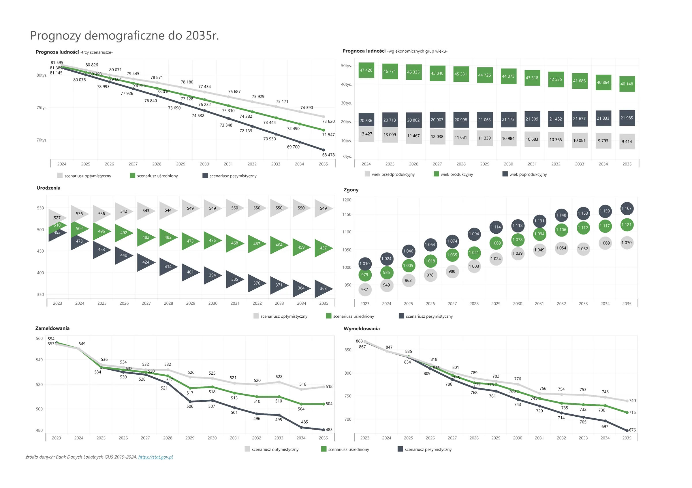
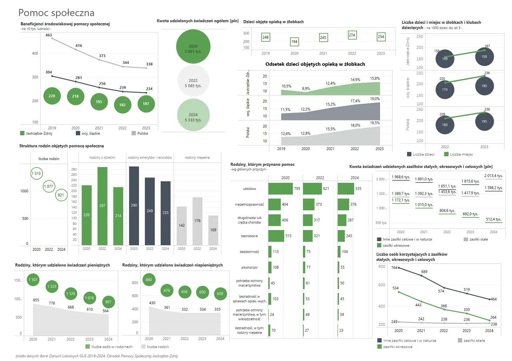
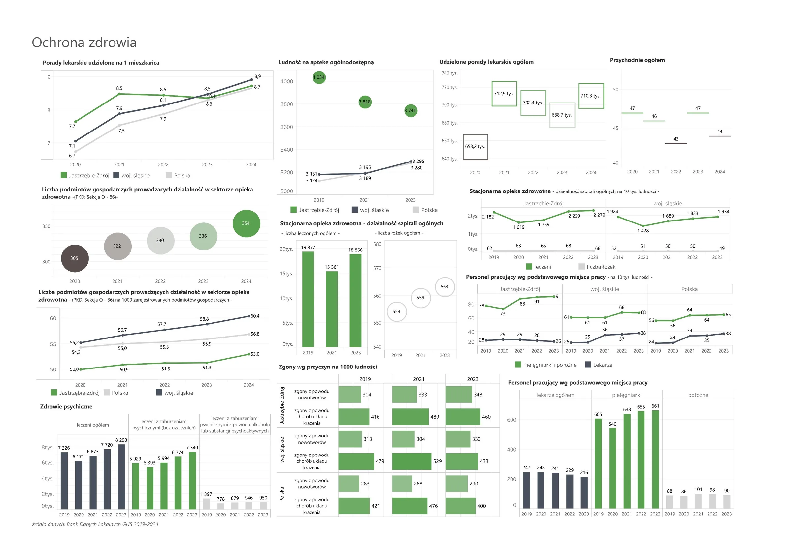
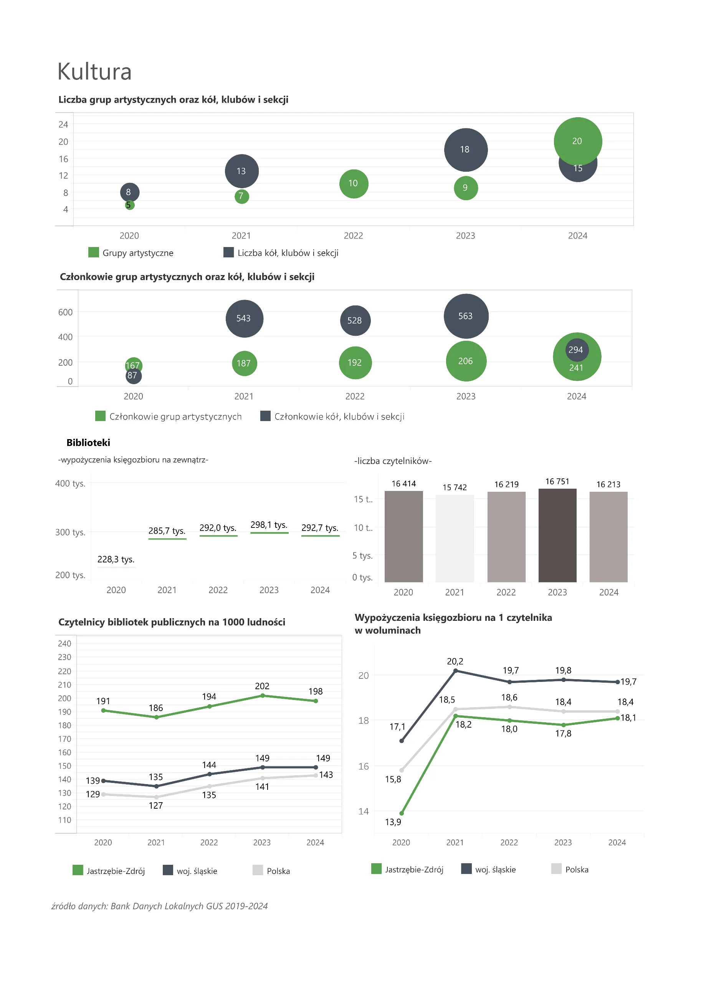
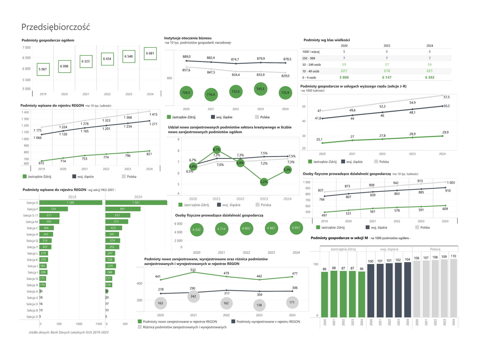
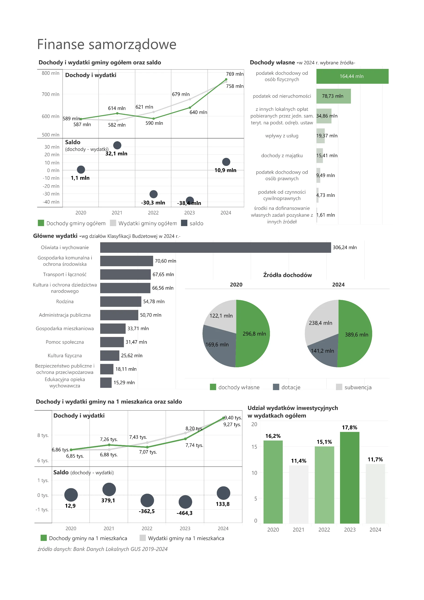
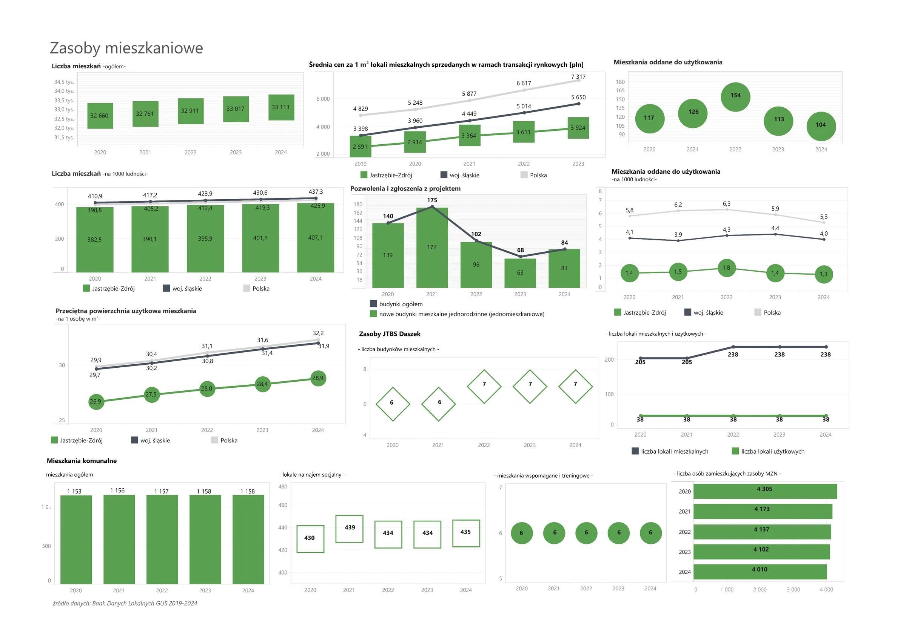
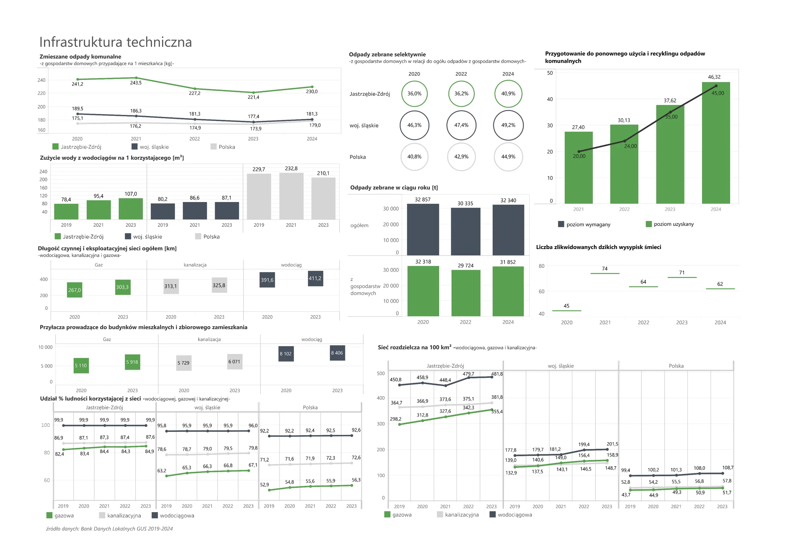

Diagnoza strategiczna
Diagnoza strategiczna to opis stanu miasta: ludzi, gospodarki, przestrzeni i środowiska. Zaczynamy od wykresów i wskaźników, a opisy znajdują się pod nimi.
Wprowadzenie i metodologia
Wstęp i metodologia badań
Diagnozę oparto na analizie danych wtórnych z lat 2020–2024 oraz na badaniach ankietowych i jakościowych (FGI, IDI)..
Ogólna charakterystyka miasta
Jastrzębie-Zdrój to miasto na prawach powiatu z ok. 81 tys. mieszkańców, silnie związane z górnictwem węgla koksowego..
Sfera społeczna

Struktura demograficzna
Liczba mieszkańców Jastrzębia-Zdroju spada, a społeczeństwo szybko się starzeje – szybciej niż w regionie i kraju..

Ruch ludności
Miasto traci mieszkańców dwukrotnie: ujemny przyrost naturalny wynika ze spadku urodzeń, a ujemne saldo migracji z…

Prognozy demograficzne
Według prognozy GUS liczba mieszkańców spadnie do 2035 r. do 71,5 tys., a do 2050 r. o 28,2%, czyli wyraźnie bardziej…

Pomoc społeczna
Spada liczba rodzin korzystających z zasiłków, ale rośnie zapotrzebowanie na usługi środowiskowe, opiekę nad seniorami…

Ochrona zdrowia
Miasto ma dobrze rozwiniętą bazę szpitalną i wysoką liczbę pielęgniarek, ale deficyt lekarzy jest wyraźny. Mieszkańcy…

Edukacja i wychowanie
Przedszkola są niemal w pełni dostępne (99,1% dzieci 3-6 lat), a miasto jest ośrodkiem edukacyjnym dla okolicznych…

Kapitał społeczny
Liczba organizacji pozarządowych rośnie (266 w 2024 r.), ale w przeliczeniu na mieszkańca jest niższa niż w…

Kultura
Miasto ma trzy miejskie instytucje kultury, a biblioteka wyróżnia się wysoką liczbą czytelników. Ofertę kulturalną…

Bezpieczeństwo
Poziom przestępczości w mieście jest niższy niż w województwie i taki sam jak w kraju, a wykrywalność wynosi około 70%..
Sfera gospodarcza

Przedsiębiorczość
Liczba firm rośnie (6,7 tys. w 2024 r.), głównie dzięki mikroprzedsiębiorstwom. W przeliczeniu na mieszkańców aktywność…

Rynek pracy
Bezrobocie jest niskie (3,4%), ale rynek pracy jest silnie związany z górnictwem. Mieszkańcy nisko oceniają dostęp do…

Finanse samorządowe
W 2024 r. budżet miasta zamknął się nadwyżką, a zadłużenie jest niskie (24,8 mln zł). Połowę dochodów stanowią dochody…
Sfera przestrzenna
Zagospodarowanie przestrzenne i rewitalizacja
Miasto jest niemal w całości pokryte planami miejscowymi, a ponad połowę jego powierzchni zajmują grunty rolne..

Zasoby mieszkaniowe
Mieszkań w Jastrzębiu-Zdroju jest mniej w przeliczeniu na mieszkańca niż w regionie i kraju, a budownictwo mieszkaniowe…

Infrastruktura techniczna
Sieci wodociągowa, kanalizacyjna i gazowa są dobrze rozwinięte, a straty wody niskie. Słabszym punktem jest gospodarka…

Transport i łączność
Miasto ma rozwijającą się sieć dróg rowerowych i dobry dostęp do internetu, ale od 2001 r. nie kursują tu pociągi..

Infrastruktura sportowo-rekreacyjna i turystyczna
Miasto ma bogatą bazę sportową i dużo zieleni, a także szlaki rowerowe i dziedzictwo przemysłowe. Barierą dla turystyki…
Sfera klimatyczno-środowiskowa
Stan środowiska naturalnego
Jakość powietrza w ostatnich latach się poprawia, lecz benzopiren przekracza normy na większości powierzchni miasta, a…
Uwarunkowania klimatyczno-środowiskowe
Klimat się ociepla: przybywa dni upalnych i opadów ekstremalnych, a miastu zagrażają susza i nagłe wezbrania Szotkówki..
Badania opinii
Badanie ankietowe mieszkańców
W czerwcu 2025 r. przebadano 382 dorosłych mieszkańców: 68,8% uważa miasto za dobre miejsce do życia, a 76,7% nie…
Badanie sektora organizacji pozarządowych
W ankiecie 30 organizacji pozarządowych 68,0% dobrze ocenia współpracę z Urzędem Miasta. Główne bariery to finanse…
Badanie młodzieży
W badaniu 538 uczniów 59% planuje wyjazd z miasta po szkole, a tylko 24,7% uznało Jastrzębie-Zdrój za dobre miejsce do…
Badanie przedsiębiorców
W ankiecie 100 mikro i małych firm koszty działalności to największe wyzwanie (52%), a 39% źle ocenia współpracę z…